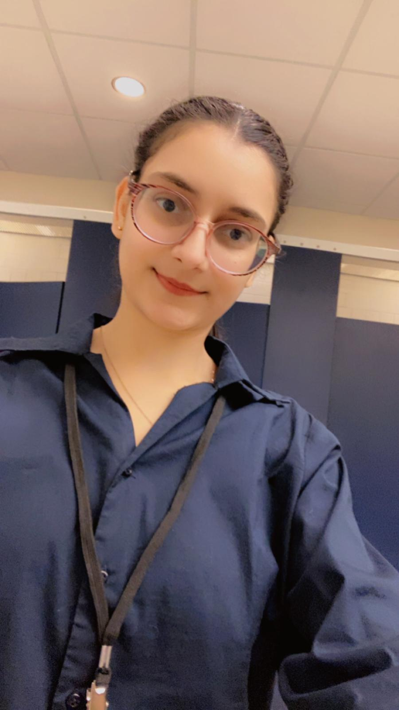

Parisha Portfolio

Contact me
Summary
I’m a Computer Science student at Purdue University Fort Wayne with hands-on experience in software development, cybersecurity simulations, and event operations leadership.
Education
- Purdue University, Fort Wayne, Indiana
College of Engineering, Technology & Computer Science, B.S. Computer Science, May 2027
- Gita Niketan Awasiya Vidhyalaya, Kurukshetra, Haryana, India
Senior Secondary of Education, July 2021
- Indraprasth Public School, Kurukshetra, Haryana, India
Secondary School of Education, May 2019
Work Experience
- Gita Niketan Awasiya Vidhyalaya, Kurukshetra, Haryana, India
IT Support
March 2020 – May 2021
- Assisted in managing digital classroom resources and online learning platforms to support student engagement
- Provided technical support by troubleshooting software or issues with digital submissions
- Assisted in creating and formatting instructional materials using Microsoft Office (primarily Excel)
-
Purdue University, Fort Wayne, Indiana
Special Events: Student Supervisor
March 2025 – Present
- Transporting material followed by setup of furniture and equipment
- Installing decorations, signage, and branding materials
- Ensuring safety and accessibility of setup
- Troubleshooting as need arises
- Coordinating with other teams like catering, tech, and hospitality
- Worked on event management with the SAB and the rest of the special events committee
- Displayed customer service skills and debriefed on-campus events to manager on-call
Technical Skills
- Programming Languages: Python, Java, C
- Tools & Technologies: Git, Microsoft Office, Linux/UNIX, Shell Scripting, Kafka, H2 Database
- Concepts: Data Structures, Algorithms, Object-Oriented Programming (OOP), Memory Management, REST API Integration, Identity and Access Management (IAM)
- Cybersecurity: Phishing Simulation Design, Security Strategy, IAM Strategy Assessment
- Game Development: Game Object Class Creation, Inventory System Improvement, Bug fixing
- Systems Knowledge: Computer Architecture, Assembly Language, Pointers, CPU & Memory Hierarchy
- Soft Skills: Quick Learner, Adaptable, Team Collaboration, Customer Service, Technical Feature Proposal Writing